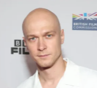

Родился 8 декабря 1992 года в Реутове Московской области.
В 16 лет поступил в Высшее театральное училище имени М. С. Щепкина
(курс Владимира Бейлиса и Виталия Иванова), которое окончил в 2013 году.
На четвёртом курсе стал лауреатом театральной премии «Золотой лист» в
номинации «Лучшая мужская роль» за роль Александра Аметистова в спектакле
«Зойкина квартира» по пьесе Михаила Булгакова.
С 2013 по 2014 год работал в московском театре «Сатирикон», где был занят
в спектаклях «Отелло» и «Ромео и Джульетта». Позже вошёл в труппу
театра «Современник».
Начал сниматься в кино в 2010 году. Среди первых работ — эпизодические
роли в сериалах «У каждого своя война», «В зоне риска», «Мотыльки».